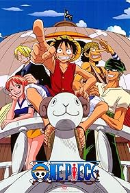
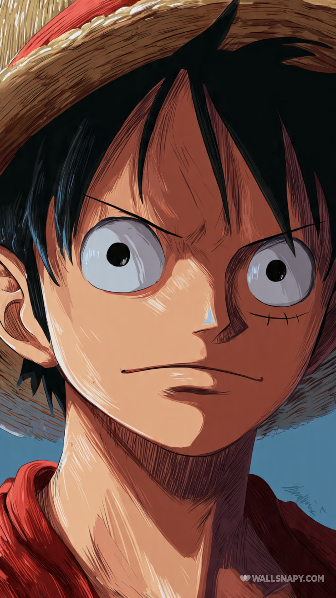
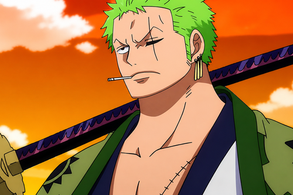
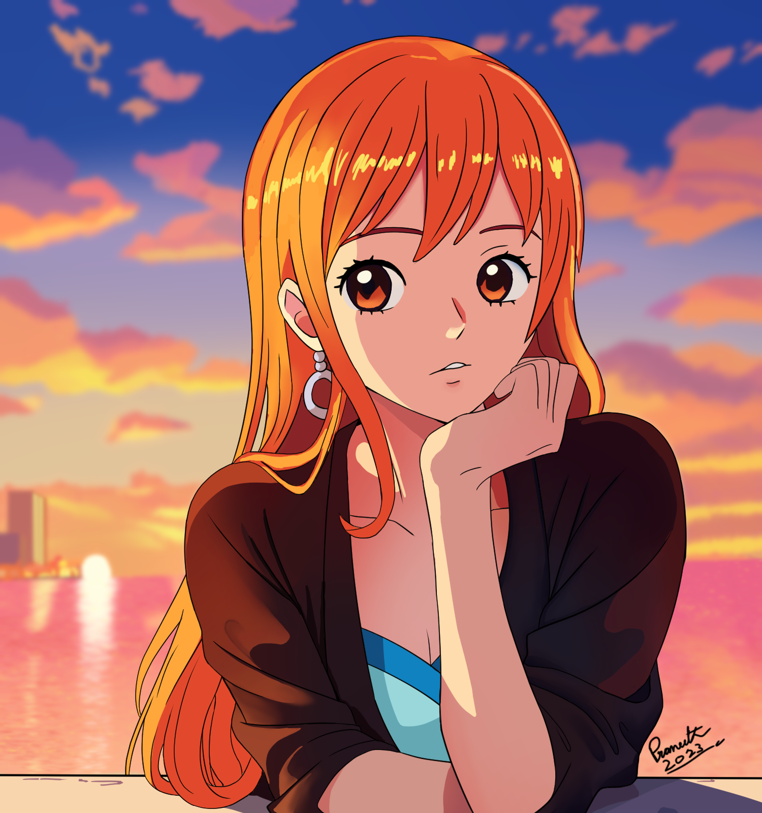
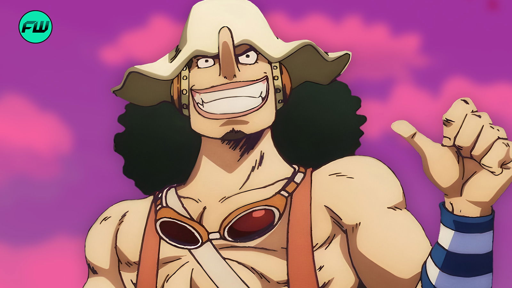
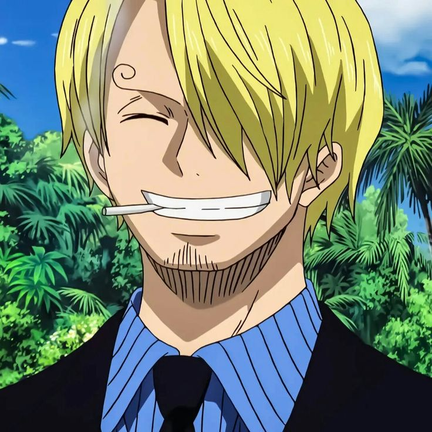

One Piece es un anime japonés basado en el manga escrito e ilustrado por Eiichiro Oda. La historia comenzó a publicarse en 1997 y el anime se estrenó en Japón en 1999. La serie sigue las aventuras de Monkey D. Luffy, un joven pirata que sueña con convertirse en el Rey de los Piratas. Luffy reúne a un grupo de compañeros conocidos como los Piratas del Sombrero de Paja y juntos recorren diferentes islas y mares en busca del legendario tesoro llamado One Piece, que fue dejado por el antiguo Rey de los Piratas, Gol D. Roger.

Luffy es el protagonista de One Piece. Es un joven pirata que tiene como objetivo encontrar el One Piece y convertirse en el Rey de los Piratas.

Zoro es uno de los primeros integrantes de la tripulación de Luffy. Es un espadachín que busca convertirse en el mejor espadachín del mundo.

Nami es la navegante de los Piratas del Sombrero de Paja. Es muy inteligente y tiene grandes conocimientos sobre navegación y mapas.

Usopp es el tirador de la tripulación. Es conocido por su creatividad, sus historias y su habilidad para utilizar diferentes tipos de armas.

Sanji es el cocinero de los Piratas del Sombrero de Paja. También es un excelente luchador y utiliza principalmente sus piernas para combatir.